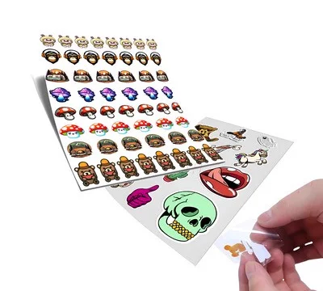

Adesivo comum
Vinil impresso
e recortado
DTF UV
Sua marca em vidro, metal e madeira.
Um filme adesivo impresso com tinta UV. Chega pronto no formato da sua arte: você destaca e aplica à mão, sem prensa e sem calor.

À primeira vista, parecem iguais.
Onde o vinil para
- Superfície lisa
- Superfície plana
- Superfície seca e limpa
Curvas, texturas e cantos vivos pedem outra solução.
Onde o DTF UV gruda
- Vidro
- Acrílico
- Metal
- Madeira
- Plástico rígido
- Copos e garrafas
- Potes transparentes
Superfícies rígidas, inclusive curvas. É para isso que a técnica existe.
Duas camadas
A cor nasce sobre o branco do próprio vinil.
Cinco camadas
O branco de suporte é o que mantém a cor em peça transparente ou escura. A tinta UV cura em camada, então a arte tem leve relevo ao toque.

Adesivo comum, em uso
O formato vem do recorte, não da arte.
Em peça transparente, o fundo aparece através da cor.
A superfície precisa ser plana para o filme assentar inteiro.
DTF UV, em uso
A arte sai no formato que você desenhou.
O branco de suporte segura a cor em vidro, em plástico transparente e em peça escura.
Acompanha a curva de copos e garrafas.
Pode ser impressa para leitura frente e verso.
A aplicação
O filme sai. A arte fica.
Você recebe a arte impressa no filme, já no formato.
Posiciona na peça e alisa de um lado ao outro.
Destaca o filme por um canto, devagar.
Pronto. Sem prensa, sem calor, sem tempo de cura.

Arraste para destacar
Como pedir
Três passos, do arquivo à peça na sua mão.
-
Envie a arte
Em PDF/X-1A, cores em CMYK, imagens a partir de 300 dpi e fontes convertidas em curvas. Arquivos em Pantone ou RGB precisam ser convertidos antes.
Sem arte pronta? A criação de arte é um serviço opcional, escolhido no fechamento do pedido.
-
A gente imprime
Produção em 1 dia útil, somada ao prazo de entrega. Formatos de catálogo: 28×20 cm, 28×40 cm e 28×100 cm, o metro.
Precisa de outra medida ou de volume maior? É orçamento, não catálogo.
-
Retire ou receba
Retirada no balcão em Osasco, ou envio pelos Correios em PAC ou SEDEX, com frete calculado no carrinho pelo peso, volume e CEP.
Há também uma rede de balcões de retirada em outras cidades.
Dúvidas que travam o pedido
O que é DTF UV, exatamente?
É uma técnica digital que usa tintas UV para imprimir em filme adesivo. O filme é aplicado depois em materiais rígidos como plástico, vidro, metal e madeira, o que dá uma personalização durável e de alta definição.
DTF UV é a mesma coisa que DTF têxtil?
Não. O DTF têxtil transfere a imagem de um filme para tecido, com prensa. O DTF UV é para superfície rígida e vai aplicado à mão, sem calor. São dois produtos diferentes, e a Xpress produz os dois.
Em quais superfícies posso aplicar?
Vidro, acrílico, metal, madeira e plástico rígido. Inclui peças curvas, como copos, taças e garrafas, e peças transparentes, como potes.
Preciso de prensa, forno ou algum equipamento?
Não. A aplicação é manual e a frio: posicione, alise a arte sobre a peça e destaque o filme.
Dá para ler a arte dos dois lados?
Sim, a impressão pode ser feita para leitura frente e verso. É o que permite usar a arte em copo, pote plástico transparente e garrafa sem perder a leitura de nenhum ângulo.
Quais tamanhos vocês produzem?
Os formatos de catálogo são 28×20 cm, 28×40 cm e 28×100 cm, vendido como o metro. Outras medidas e volumes maiores saem por orçamento.
Qual é o prazo?
A produção leva 1 dia útil, somada ao prazo de entrega escolhido. Pedidos são embalados e postados em até 5 dias úteis após a confirmação do pagamento; pedidos feitos sexta após as 12h, sábado, domingo ou feriado contam a partir do primeiro dia útil seguinte.
Como meu arquivo precisa chegar?
PDF/X-1A é o formato mais rápido de produzir. Use cores em CMYK, imagens com no mínimo 300 dpi e fontes convertidas em curvas, com textos acima de 7 pontos. Arquivos com cores Pantone ou RGB precisam ser convertidos antes do envio.
E se eu não tiver a arte pronta?
A criação de arte é oferecida como serviço opcional, selecionado na hora de fechar o pedido. Fale com a equipe pelo WhatsApp antes, que a gente alinha o que é necessário.
Como recebo o pedido?
Retirada no balcão em Osasco, envio pelos Correios em PAC ou SEDEX com frete calculado no carrinho, ou retirada em um dos balcões parceiros.
Manda a arte.
A gente imprime.
Produção em 1 dia útil. Atendimento de segunda a sexta, das 9h às 18h.
Pedir orçamentoAbre uma conversa no WhatsApp com a equipe da Xpress.